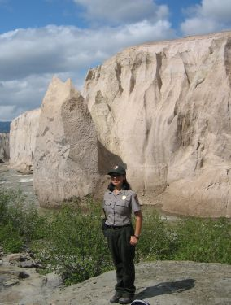
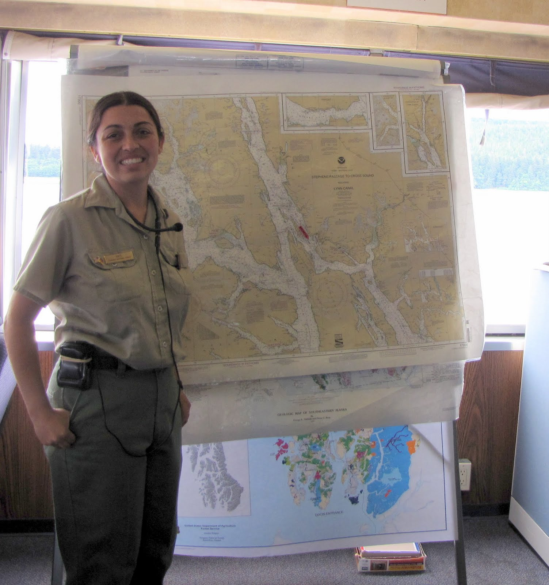
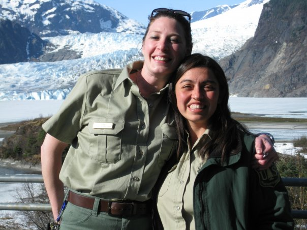

Born and raised in sunny Southern California I was one of the first junior rangers of Orange County.
Most of my life was spent preparing to be a full fledged park ranger for the National Park Service. I learned German by living in Austria for a year, I got a degree in Natural Resources Mangagment from the University of Alaska, and I got another degree in Environmental Education from Griffith University in Brisbane Australia.
At first I was a German speaking park ranger at Katmai National Park!
Then I was a U.S. Forest Service Ranger on an Alaska Marine Highway ferry and at the Mendenhall Glacier!
  At this point in my life I had seen a lot of the world, and but serverly missed living in Austrlia, and had some other things happening in my life that inspired me to go back. I decided that it was time I got a visa and bought a plane ticket. Within 6 months of the decision I was back in Brisbane.
I was there for a year on a working holiday visa which allowed me to work for the Queensland Museum and the Queensland Performing Arts Centre.